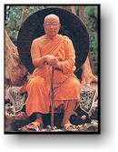

BuddhaSasana Home Page
English Section
|  | HANDBOOK FOR MANKIND
Buddhadasa Bhikkhutranslated from the
Thai by |
In 1956, the Venerable Buddhadasa Bhikkhu gave a series of lectures to a group of prospective judges, which were subsequently edited and arranged into what became The Handbook for Mankind. Since then, the success of this small book has been astounding. Well over 100,000 copies have been printed in Thai, and the book still enjoys widespread popularity, more than three decades after the original talks. The reason for the "Handbook's" duration is clear: that the Venerable Buddhadasa offers fresh insights into a timeless Truth (Dhamma), in the direct and simple manner that characterizes all his teaching. The clarity of his insight brings the Dhamma to life, so that today, a new generation of readers, not yet born at the time of these talks, can find meaning in his words. As a guide for newcomers to the Buddha-Dhamma (the Truth which the Buddha awakened to and subsequently taught), this book is an invaluable guide. In it are contained the essential teachings of Buddhism. The "Handbook" is especially useful for those who approach the Buddha's teaching, not as a subject for scholarly study, buy as a means to understand and ennoble their lives. The Handbook for Mankind was originally published in English by the Sublime Life Mission, buy has long been out of print. With their permission, we have reprinted this book, making some corrections where necessary, buy leaving the text otherwise intact. Our thanks are due to Mr. Pun Chongprasoed, who first put this book together in Thai, and to all the people whose effort has made possible the reprinting of this book. Buddhadasa Bhikkhu (Servant of the Buddha) went forth as a bhikkhu (Buddhist monk) in 1926, at the age of twenty. After a few years of study in Bangkok, which convinced him "purity is not to be found in the big city," he was inspired to live close with nature in order to investigate the Buddha-Dhamma. Thus, he established Suan Mokkhabalarama (The Grove of the Power of Liberation) in 1932, near his hometown of Pum Riang (now in Chaiya District). At that time, it was the only forest Dhamma Center and one of the few places dedicated to vipassana meditation in Southern Thailand. Word of Buddhadasa Bhikkhu, his work, and Suan Mokkh spread over the years so that they are easily described as "one of the most influential events of Buddhist history in Siam." Here, we can only mention some of the most interesting services he has rendered Buddhism. Ajahn Buddhadasa worked painstakingly to establish and explain the correct and essential principles of what he called "pristine Buddhism," that is, the original realization of the Lord Buddha before it was buried under commentaries, ritualism, clerical politics, and the like. His work was based in extensive research of the Pali texts (Canon and commentary), especially of the Buddha's Discourses (Sutta Pitaka), followed by personal experiment and practice with these teachings. Then he taught whatever he could say truly quenches dukkha (dissatisfaction, suffering). His goal was to produce a complete set of references for present and future research and practice. His approach was always scientific, straight-forward, and practical. Although his formal education only went as far as ninth grade and beginning Pali studies, he was given five Honorary Doctorates by Thai universities. His books, both written and transcribed from talks, fill a room at the National Library and influence all serious Thai Buddhists in Siam. Doctoral dissertations are still being written about him and his legacy. His books can be found in bookstores around the country and are favorites as gifts at cremations. Progressive elements in Thai society, especially the young, were inspired by his teaching and selfless example. Since the 1960's, activists and thinkers in areas such as education, ecology, social welfare, and rural development have drawn upon his teaching and advice. Most of the monks involved in nature conservation and community development were inspired by him. He provided the link between the scriptural tradition and engaged buddhist practice today. After the founding of Suan Mokkh, he studied all schools of Buddhism, as well as the other major religious traditions. This interest was practical rather than scholarly. He sought to unite all genuinely religious people in order to work together to help, as he put it, "drag humanity out from under the power of materialism." This broadmindedness won him friends and students from around the world, including Christians, Muslims, Hindus, and Sikhs. His last project was to establish an International Dhamma Hermitage. This addition to Suan Mokkh is intended to provide facilities for: Courses which introduce foreigners to the correct
understanding of Buddhist principles and practice; He also left instructions for a small monastery in which foreign monks may train as Dhamma-duta (Dhamma missionaries). It now functions under the name "Daun Kiam" or Suan Atammayatarama. A similar facility for nuns, Thai and foreign, awaits the women who will make it happen. He called it Dhamma-Mata (Dhamma Mothers, those who give birth to others through Dhamma). Ajarn Buddhadasa died in 1993 after a series of heart attacks and strokes that he kept bouncing back from in order to teach. The final stroke occured as he was preparing notes for a talk to be given on his birthday in two days (27 May). Suan Mokkh carries on in the hearts and actions of all those who have been inspired and guided by his example and words. Suan Mokkh is not so much a physical place as it is the space of liberation that we all must discover in this very life. ABOUT THE TRANSLATOR Rod Bucknell first became seriously interested in Buddhism in the mid -1960's, when, during a visit to Thailand, he was introduced to the techniques of insight meditation. After spending a year in various Thai meditation centers and monasteries, he took ordination as a bhikkhu (monk) under the guidance of Ajahn Pannananda of Wat Cholapratan Rangsarit. He soon became interested also in the teachings of Ajahn Buddhadasa, and, recognizing their potential value to westerners, began translating some of the Ajahn's more important works into English. During the four years he spent in the Sangha, he translated altogether six works of varying length, usually in close consultation with the Ajahn in order to ensure accuracy in the rendering of key concepts. Despite his return to lay life, he maintains a close interest - both scholarly and practical - in Ajahn Buddhadasa's teachings, and has published several related articles in religious studies journals. He is currently a lecturer in the Department of Studies in Religion at the University of Queensland, Australia. ABOUT THIS ELECTRONIC EDITON HANDBOOK FOR MANKIND by Buddhadasa Bhikkhu translated from the Thai by Ariyananda Bhikkhu (Roderick S. Bucknell) For more information: Dhammadana Foundation c/o Suan Mokh Chaiya Surat Thani 84110 Thailand First electronic edition: December 1996 Scanning & Proofreading: John Gebhardt: Email: gebhardt@well.com This electronic edition is offered
FOR FREE DISTRIBUTION ONLY This text is a gift of Dhamma. You
may print this file for your personal use, and you may make and distribute unaltered
copies of this file, provided that you charge no fees of any kind for its distribution. -ooOoo- See also: Vietnamese translation |
Source: BuddhaNet, Australia, http://www.buddhanet.net/